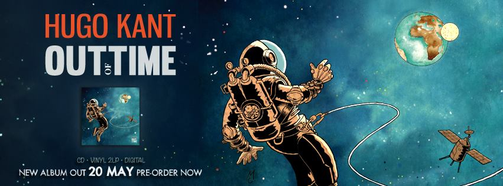

Hugo Kant de son vrai nom Quentin Le Roux, est un compositeur et multi-instrumentiste français.
Né en 1976, il a commencé à jouer du piano dès l’âge de 5 ans au Conservatoire. Quentin Le Roux est un musicien précoce et aguerri qui a mêlé son groove à celui de nombreuses formation, dont Güs Weg Watergang et David Lafore Cinq Têtes. En 2010, il entame un projet en solo sous le nom d’Hugo Kant.
Considéré comme un « véritable chef d’orchestre moderne », Hugo Kant nous plonge dans un univers de musique électronique et acoustique, de Nu-Jazz, de Trip-Hop et de downtempo teinté d’Acid-Jazz, de Jazz-Rock, de musique classique, voire de psychédélisme. Ses interprétations instrumentales sont pénétrantes, ses échantillonnages créent une atmosphère envoûtante et ses rythmiques sont d’une densité captivante.
